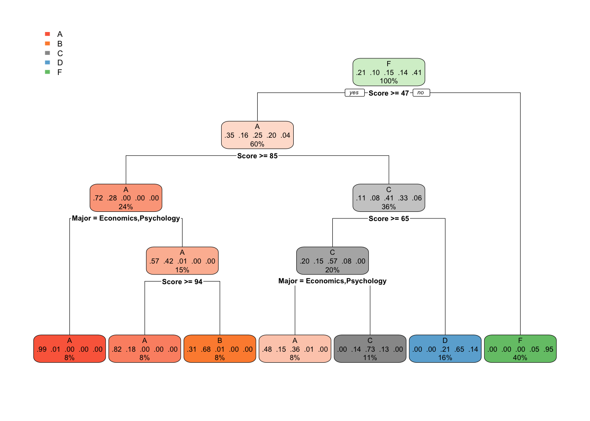

Lecture: 16 🔖 Predictions with rpart
- Lecture slides:
Decision trees are one of the most powerful and popular tools for classification and prediction. The reason decision trees are very popular is that they can generate rules which are easier to understand as compared to other models. They require much less computations for performing modeling and prediction. Both continuous/numerical and categorical variables are handled easily while creating the decision trees.
16.1 Use of Rpart
Recursive Partitioning and Regression Tree RPART library is a collection of routines which implement Classification and Regression Tree (CART) which is a type of Decision Tree.The resulting model can be represented as a binary tree.
The library associated with this RPART is called rpart. Install this library using install.packages("rpart").
Syntax for building the decision tree using rpart():
rpart( formula , method, data, control,...)- formula: here we mention the prediction column and the other related columns(predictors) on which the prediction will be based on.
prediction ~ predictor1 + predictor2 + predictor3 + ...
- method: here we describe the type of decision tree we want. If nothing is provided, the function makes an intelligent guess. We can use “anova” for regression, “class” for classification, etc.
- data: here we provide the dataset on which we want to fit the decision tree on.
- control: here we provide the control parameters for the decision tree. Explained more in detail in the section further in this chapter.
- formula: here we mention the prediction column and the other related columns(predictors) on which the prediction will be based on.
For more info on the rpart function visit rpart documentation
Lets look at an example on the Moody 2022 dataset.
- We will use the rpart() function with the following inputs:
- prediction -> GRADE
- predictors -> SCORE, DOZES_OFF, TEXTING_IN_CLASS, PARTICIPATION
- data -> moody dataset
- method -> “class” for classification.
dc_light_exercise_unnamed-chunk-123
## Warning: package 'rpart' was built under R version 4.1.2## n= 828
##
## node), split, n, loss, yval, (yprob)
## * denotes terminal node
##
## 1) root 828 642 D (0.19 0.18 0.19 0.22 0.21)
## 2) SCORE>=80.025 176 16 A (0.91 0.091 0 0 0) *
## 3) SCORE< 80.025 652 466 D (0 0.21 0.25 0.29 0.26)
## 6) SCORE>=29.545 475 307 D (0 0.28 0.34 0.35 0.025)
## 12) SCORE>=51.455 256 122 B (0 0.52 0.46 0.016 0)
## 24) SCORE>=59.15 181 49 B (0 0.73 0.27 0 0)
## 48) PARTICIPATION>=0.505 69 0 B (0 1 0 0 0) *
## 49) PARTICIPATION< 0.505 112 49 B (0 0.56 0.44 0 0)
## 98) SCORE>=67.33 46 5 B (0 0.89 0.11 0 0) *
## 99) SCORE< 67.33 66 22 C (0 0.33 0.67 0 0)
## 198) PARTICIPATION< 0.155 31 12 B (0 0.61 0.39 0 0) *
## 199) PARTICIPATION>=0.155 35 3 C (0 0.086 0.91 0 0) *
## 25) SCORE< 59.15 75 6 C (0 0.027 0.92 0.053 0) *
## 13) SCORE< 51.455 219 55 D (0 0 0.2 0.75 0.055)
## 26) SCORE>=42.935 93 42 D (0 0 0.45 0.55 0)
## 52) PARTICIPATION>=0.65 21 0 C (0 0 1 0 0) *
## 53) PARTICIPATION< 0.65 72 21 D (0 0 0.29 0.71 0)
## 106) DOZES_OFF=sometimes 37 16 C (0 0 0.57 0.43 0)
## 212) TEXTING_IN_CLASS=never,rarely 27 6 C (0 0 0.78 0.22 0) *
## 213) TEXTING_IN_CLASS=always 10 0 D (0 0 0 1 0) *
## 107) DOZES_OFF=always,never 35 0 D (0 0 0 1 0) *
## 27) SCORE< 42.935 126 13 D (0 0 0.0079 0.9 0.095) *
## 7) SCORE< 29.545 177 18 F (0 0 0 0.1 0.9) *We can see that the output of the rpart() function is the decision tree with details of,
- node -> node number
- split -> split conditions/tests
- n -> number of records in either branch i.e. subset
- yval -> output value i.e. the target predicted value.
- yprob -> probability of obtaining a particular category as the predicted output.
Using the output tree, we can use the predict function to predict the grades of the test data. We will look at this process later in section 16.4
But coming back to the output of the rpart() function, the text type output is useful but difficult to read and understand, right! We will look at visualizing the decision tree in the next section.
16.2 Visualize the Decision tree
To visualize and understand the rpart() tree output in the easiest way possible, we use a library called rpart.plot. The function rpart.plot() of the rpart.plot library is the function used to visualize decision trees.
The rpart.plot library is a front-end wrapper to the library prp which is the most basic library for plotting decision trees. prp allows various aesthetic modifications for visualizing the decision tree. We will look at a few examples of using prp below.
But, first lets look at a example to visualize the output decision tree in the previous example on Moody dataset using rpart.plot()
NOTE: The online runnable code block does not support rpart.plot and prp library and functions, thus the output of the following code examples are provided directly.
dc_light_exercise_unnamed-chunk-124
## n= 828
##
## node), split, n, loss, yval, (yprob)
## * denotes terminal node
##
## 1) root 828 642 D (0.19 0.18 0.19 0.22 0.21)
## 2) SCORE>=80.025 176 16 A (0.91 0.091 0 0 0) *
## 3) SCORE< 80.025 652 466 D (0 0.21 0.25 0.29 0.26)
## 6) SCORE>=29.545 475 307 D (0 0.28 0.34 0.35 0.025)
## 12) SCORE>=51.455 256 122 B (0 0.52 0.46 0.016 0)
## 24) SCORE>=59.15 181 49 B (0 0.73 0.27 0 0)
## 48) PARTICIPATION>=0.505 69 0 B (0 1 0 0 0) *
## 49) PARTICIPATION< 0.505 112 49 B (0 0.56 0.44 0 0)
## 98) SCORE>=67.33 46 5 B (0 0.89 0.11 0 0) *
## 99) SCORE< 67.33 66 22 C (0 0.33 0.67 0 0)
## 198) PARTICIPATION< 0.155 31 12 B (0 0.61 0.39 0 0) *
## 199) PARTICIPATION>=0.155 35 3 C (0 0.086 0.91 0 0) *
## 25) SCORE< 59.15 75 6 C (0 0.027 0.92 0.053 0) *
## 13) SCORE< 51.455 219 55 D (0 0 0.2 0.75 0.055)
## 26) SCORE>=42.935 93 42 D (0 0 0.45 0.55 0)
## 52) PARTICIPATION>=0.65 21 0 C (0 0 1 0 0) *
## 53) PARTICIPATION< 0.65 72 21 D (0 0 0.29 0.71 0)
## 106) DOZES_OFF=sometimes 37 16 C (0 0 0.57 0.43 0)
## 212) TEXTING_IN_CLASS=never,rarely 27 6 C (0 0 0.78 0.22 0) *
## 213) TEXTING_IN_CLASS=always 10 0 D (0 0 0 1 0) *
## 107) DOZES_OFF=always,never 35 0 D (0 0 0 1 0) *
## 27) SCORE< 42.935 126 13 D (0 0 0.0079 0.9 0.095) *
## 7) SCORE< 29.545 177 18 F (0 0 0 0.1 0.9) *

We can see that after plotting the tree using rpart.plot() function, the tree is more readable and provides better information about the splitting conditions, and the probability of outcomes. Each leaf node has information about
- the grade category.
- the outcome probability of each grade category.
- the records percentage out of total records.
To study more in detail the arguments that can be passed to the rpart.plot() function, please look at these guides rpart.plot and Plotting with rpart.plot (PDF)
Note that for any beginner using rpart.plot() function is the easiest way. But if you want to learn another way of plotting rpart trees then the following function can be used.
So,another form of plotting rpart trees in a very minimalistic way is using the plot rpart i.e. prp() function, which is actually the working function behind rpart.plot().
Lets look at a same example like above but using prp().
# First lets import the rpart library
library(rpart)
# Import dataset
moody <- read.csv("https://raw.githubusercontent.com/deeplokhande/data101demobook/main/files/dataset/MOODY-2019.csv")
# Use of the rpart() function.
tree <- rpart(GRADE ~ SCORE+ON_SMARTPHONE+ASKS_QUESTIONS+LEAVES_EARLY+LATE_IN_CLASS, data = moody[,-c(1)],method = "class")
# Now lets import the rpart.plot library to use the rpart.plot() function.
library(rpart.plot)
# Use of the prp function to visualize the decision tree.
prp(tree)
Output Plot of prp() function
We can see that the output of the prp() function is a very minimalist tree, without any colors with minimum required information. There are other arguments that can be passed to the prp() function to increase the aesthetic look and the information provided. To learn those extra arguments visit this guide prp()
| NOTE: In this chapter, from this point forward, the rpart.plots() generated in any example below will be shown as images, and also the code to generate those rpart.plots will be commented in the interactive code blocks. If you want to generate these plots yourself, please use a local Rstudio or R environment. |
16.3 Rpart Control
Now let’s look at the rpart.control() function used to pass the control parameters to the control argument of the rpart() function.
rpart.control( *minsplit*, *minbucket*, *cp*,...)- minsplit: the minimum number of observations that must exist in a node in order for a split to be attempted. For example, minsplit=500 -> the minimum number of observations in a node must be 500 or up, in order to perform the split at the testing condition.
- minbucket: minimum number of observations in any terminal(leaf) node. For example, minbucket=500 -> the minimum number of observation in the terminal/leaf node of the trees must be 500 or above.
- cp: complexity parameter. Using this informs the program that any split which does not increase the accuracy of the fit by cp, will not be made in the tree.
For more information of the other arguments of the rpart.control() function visit rpart.control
Note: The ratio of minsplt to minbucket is 3:1. Thus if only one of the minsplit/minbucket is provided the other value is set using the above ratio. Also if both values are provided, unless the values are not in the above ratio, the rpart.control() the resorts to the default value. Also note, the default value of cp is 0.01.
Let look at few examples.
Suppose you want to set the control parameter minsplit=200.
dc_light_exercise_unnamed-chunk-126
## var n
## 1 SCORE 1580
## 2 SCORE 1137
## 4 SCORE 469
## 5 LEAVES_EARLY 668
## 11 SCORE 218
## 3 SCORE 443
Output tree plot of after setting minsplit=200 in rpart.control() function
We can see from the output of tree$splits and the tree plot, that at each split the total amount of observations are above 200. Also, in comparison to the tree without control, the tree with control has lower height, and lesser count of splits.
Now, lets set the minbucket parameter to 100, and see how that affects the tree parameters.
dc_light_exercise_unnamed-chunk-127
## var n
## 8 <leaf> 149
## 9 <leaf> 320
## 5 <leaf> 668
## 6 <leaf> 240
## 7 <leaf> 203
Output tree plot of after setting minbucket=100 in rpart.control() function
We can see for the output and the tree plot, that the count of observations in each leaf node is greater than 100. Also, the tree height has shortened, suggesting that the control method was able to shorten the tree size.
Lets now use the cp parameter and see its effect on the tree.
dc_light_exercise_unnamed-chunk-128
## CP nsplit rel error xerror xstd
## 1 0.252561475 0 1.00000000 1.00000000 0.019790876
## 2 0.160860656 2 0.49487705 0.49487705 0.018762838
## 3 0.113729508 3 0.33401639 0.33709016 0.016536677
## 4 0.034323770 4 0.22028689 0.22643443 0.014126270
## 5 0.013319672 6 0.15163934 0.15778689 0.012079300
## 6 0.011782787 8 0.12500000 0.14549180 0.011647836
## 7 0.009221311 10 0.10143443 0.10963115 0.010233281
## 8 0.008709016 12 0.08299180 0.09528689 0.009585584
## 9 0.005000000 14 0.06557377 0.07274590 0.008437143
Output tree plot of after setting cp=0.005 in rpart.control() function
We can see for the output and the tree plot, that the tree size has increased, with increase in number of splits, and leaf nodes. Also we can see that the minimum CP value in the output is 0.005.
16.4 Prediction using rpart.
Now that we have seen the process to create a decision tree and also plot it, we will like to use the output tree to predict the required attribute.
From the moody example, we are trying to predict the grade of students. Lets look at the predict() function to predict the outcomes.
predict(*object*,*data*,*type*,...)- object: the generated tree from the rpart function.
- data: the data on which the prediction is to be performed.
- type: the type of prediction required. One of “vector”, “prob”, “class” or “matrix”.
Now lets use the predict function to predict the grades of students using the tree generated on the Moody dataset.
dc_light_exercise_unnamed-chunk-129
## 1 2 3 4 5 6
## D F C A C A
## Levels: A B C D FOur prediction accuracy on the training data set is 93.73% and the error rate is 6.27%.This prediction accuracy calculated on the training dataset is called training accuracy. However, what we are really interested in is testing data accuracy. How can we make sure that our prediction model will achieve good testing data accuracy? It is not enough to see good training data accuracy. We need to do more work. It is called cross validation.Use only part of the training data for training the prediction model and the remaining part for testing. For that we would need to split the training data at least into two parts, Training and Testing and then repeat the training process on the training dataset and the prediction on testing dataset.
One way of doing this is to randomly assign data to either training or testing subset. We will look at a small example of splitting the complete dataset into training and testing dataset with a 70-30 ratio.
dc_light_exercise_unnamed-chunk-130
## 1 2 3 4 5 6
## D F C A C A
## Levels: A B C D F## [1] 93.7341816.5 Split the data yourself.
dc_light_exercise_unnamed-chunk-131
## [1] 1580## [1] 1125## [1] 0.7120253## [1] 455## [1] 0.2879747As we can see we split the original data with 1580 rows into two dataset, training data with almost 70% of rows of the original, and testing data with almost 30% of the original. Notice that we used a random sampling of the data, and not just sequential, to avoid any unbalanced distribution of attributes.
Now, we looked at a method to split the dataset into training and testing data. But there is another type of splitting of the dataset which involves splitting the data into 3 parts namely, training, cross-validation and testing. We will look at the use of cross-validation and the process, in the next section 16.6.
Typically, the ratio of train-validation-test is 60-20-20 or 50-25-25.
Before that lets look at a simple method to perform a 3 way split with ratio 60-20-20.
dc_light_exercise_unnamed-chunk-132
## [1] 1580## [1] 930## [1] 0.5886076## [1] 347## [1] 0.2196203## [1] 303## [1] 0.1917722We can see that the dataset is split into 3 parts, with 60% in training data, 20% in validation data, and 20% in testing data.
In general, this process of repetitively using subsets of training data for training and testing is called cross validation.
16.6 Cross Validation
The goal of cross-validation is to test the model’s ability to predict new data that was not used in estimating/training it, in order to avoid problems like overfitting and selection bias, and to give an insight on how the model will generalize to an independent dataset(i.e., an unknown dataset).
Cross-validation also helps in selecting and fine-tuning the hyper-parameters of the models. In our case of the decision tree, the hyper parameters could be the control parameters that determine the size of the decision tree, which in-turn determines the accuracy of the tree.
One round of cross-validation involves partitioning data into complementary subsets, and then performing model training on one subset, and validating the results on the other subset. In most methods, multiple rounds of cross-validation are performed using different partitions in each round, and the validation results are combined (e.g. averaged) over the rounds to give an estimate of the model’s predictive performance.
Another use of cross-validation is when you don’t have the test data, and hence, you don’t have a way to determine the true accuracy of the model. Because we cannot determine accuracy on the test dataset, we partition our training dataset into training and validation (testing). We train our model (rpart or lm) on the train partition and test on the validation partition. The accuracy on the validation data is called cross-validation accuracy, while that on the train data is called training accuracy.
Lets not dive too deep into the theory of this cross validation technique, but lets learn about the cross_validate() function, that helps us achieve this.
cross_validate(*data*, *tree*, *n_iter*, *split_ratio*, *method*)- data: The dataset on which cross validation is to be performed.
- tree: The decision tree generated using rpart.
- n_iter: Number of iterations.
- split_ratio: The splitting ratio of the data into train data and validation data.
- method: Method of the prediction. “class” for classification.
The way the function works is as follows:
- It randomly partitions your data into training and validation.
- It then constructs the following two decision trees on training partition:
- The tree that you pass to the function.
- The tree is constructed on all attributes as predictors and with no control parameters. -It then determines the accuracy of the two trees on validation partition and returns you the accuracy values for both the trees.
The first column corresponds to the cross-validation accuracy on the tree that you pass; the second is the cross-validation accuracy on the tree without any control and all attributes.
The values in the first column(accuracy_subset) returned by cross-validation function are more important when it comes to detecting overfitting. If these values are much lower than the training accuracy you get, that means you are overfitting.
We would also want the values in accuracy_subset to be close to each other (in other words, have low variance). If the values are quite different from each other, that means your model (or tree) has a high variance which is not desired.
The second column(accuracy_all) tells you what happens if you construct a tree based on all attributes. If these values are larger than accuracy_subset, that means you are probably leaving out attributes from your tree that are relevant.
Each iteration of cross-validation creates a different random partition of train and validation, and so you have possibly different accuracy values for every iteration.
Let’s look at the cross_validate() function in action in the example below.
We will pass the tree with formula as GRADE ~ SCORE+ON_SMARTPHONE+LEAVES_EARLY, and control parameter, with minsplit=100.
And for cross_validate() function, we will usen_iter=5, and split_raitio=0.7
NOTE: Cross-Validation repository is already preloaded for the following interactive code block. Thus you can directly use the cross_validate() function in the following interactive code block. But if you wish to use the code_validate() function locally, please use
install.packages("devtools")
devtools::install_github("devanshagr/CrossValidation")
CrossValidation::cross_validate()## 1 2 3 4 5 6
## D F B A B A
## Levels: A B C D F## [1] 0.9063291## [[1]]
## accuracy_subset accuracy_all
## 1 0.9135021 0.9261603
## 2 0.9050633 0.9345992
## 3 0.8924051 0.9324895
## 4 0.8797468 0.9324895
## 5 0.9261603 0.9324895
##
## [[2]]
## [[2]]$average_accuracy_subset
## [1] 0.9033755
##
## [[2]]$average_accuracy_all
## [1] 0.9316456
##
## [[2]]$variance_accuracy_subset
## [1] 0.0003258025
##
## [[2]]$variance_accuracy_all
## [1] 1.023696e-05NOTE: If you encounter error while running the cross-validation function that said “new levels encountered” in test, make sure the dataset is imported again with read.csv() attribute stringsAsFactors as TRUE or T. For more information about the inner-working of the cross_validate() function visit cross_validate()
We can see in the output the Training accuracy, the table of cross-validation accuracy at each iteration for both the passed tree and the tree on all attribute and also their averages and variances.
Few Observation from the selected example above are:
- For the tree passed with selected attributes and some control parameters, the cross-validation accuracy’s (i.e. accuracy values in the
accuracy_subsetcolumn) are fairly high for all iterations and have very low variance. - They are close to the training accuracy which indicates we are not overfitting.
- Observe that the accuracy at each iteration of the accuracy_subset and accuracy_all column are relatively, close but not exact, suggesting that there are more attributes or other control parameters that can be included to the passed tree, to further increase the accuracy, thus closing the gap.
Thus using cross-validation we were able to figure out with certainty, that the passed tree, is not the best tree that can be created using the training data. Also, we saw whether the generated tree overfits the training data or not.
EOC